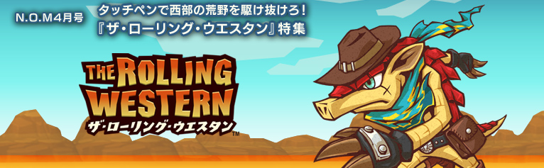
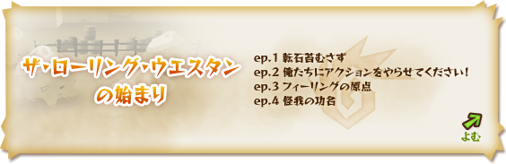
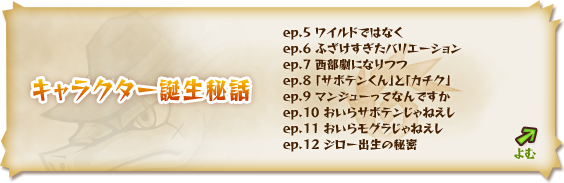
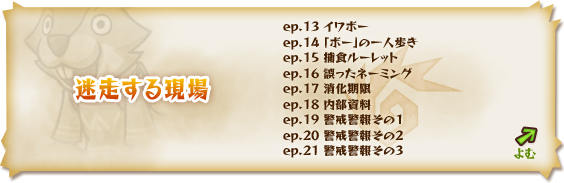
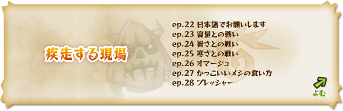
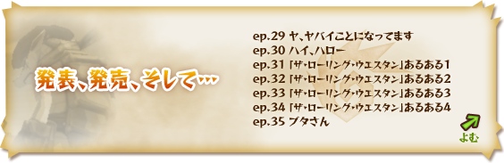
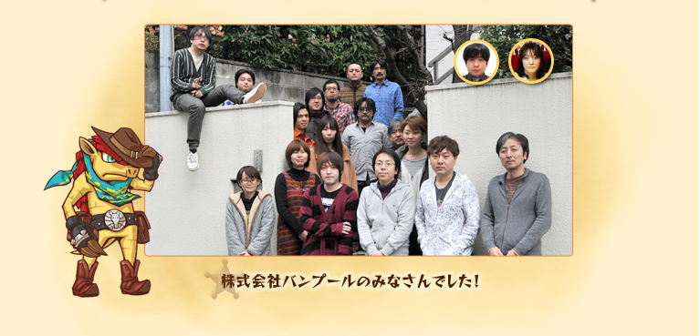

公式ページへ
1
2
3
4
トップへ
独特の世界観やゲームシステムなど、たくさんのこだわりが詰まった『ザ・ローリング・ウエスタン』は、どんな風に開発されたのか？
株式会社バンプールのディレクター・津田純さんに、開発中のマル秘エピソードをたっぷりうかがいました。
ゲーム同様に、ひと味違った面白エピソード満載です。
ちなみに、N.O.Mでは、過去にもバンプールのみなさんにインタビューをしています。こちらもぜひご覧ください。
» N.O.M 2006年9月号
» N.O.M 2009年8月号





